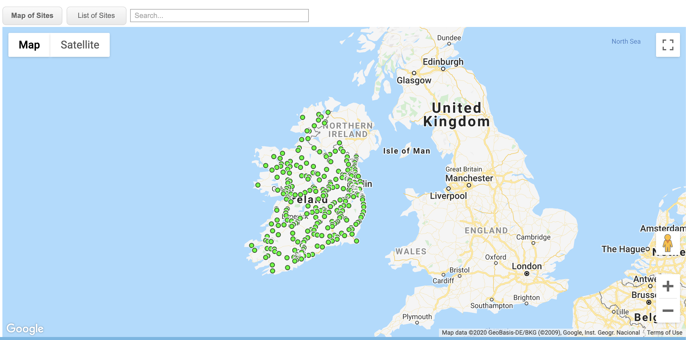

Short answer: no
Back in April, there was a bit of a media storm over whether a spike in cases along Irish border (notably Cavan) was caused by the differential travel restrictions between Northern Ireland (NI) and Ireland This was most vocally stated by Dr Gabriel Scally, the President of the Epidemiology and Public Health section of the Royal Society of Medicine, in the Irish News, but was also picked up in the Irish Times, and the Guardian amongst many others.
The key point raised in the article was:
“Co. Cavan has the highest incidence rate of coronavirus in the south per 100,000 of the population, followed by Dublin and Monaghan.”
At this particular point in the pandemic, there were two slightly different lockdown strategies. Ireland had broadly a two-stage strategy, with schools, many workplaces, etc, closed on the 12th March, with everyone advised to stay at home from 27th March. Meanwhile the UK government closed bars on the 20th March, but didn’t enter into a ‘full’ lockdown until 28th March.
In theory, this means that those who travel to school or work in NI might have been doing so during those weeks between 12th March and 20th March, and so transferring the virus across the border.
The issue of the border county spike was downplayed by some of the senior NPHET members, most notably Tony Holohan said that it was ‘unlikely to be a spillover’:
“This is a disease and you get regional concentrations”
However, no-one seemed to really quote any evidence for or against these patterns. We thought we would have a look at traffic data to see if we could make a more informed opinion.
If you download the county data for Ireland and plot the number of cases per 100k residents you will see the following:
preservef347905f72f0c55a
Hover your mouse over the graph to identify individual counties. It’s not that clear to see the differences between the counties so let’s highlight the border counties of Cavan, Donegal, Leitrim, Monaghan and Sligo:
preservee82569bef1c797cb
It certainly seems that Cavan and Monaghan are very high, with Cavan above even Dublin when corrected for population size. But perhaps some of the others (Leitrim, Sligo, etc) are pretty in line with the others. Was this due to the transport across the border? Or was it just regional variation in diseases due to something else, such as older populations, more care homes, etc?
Transport Infrastructure Ireland have a wonderful website where you can get hourly traffic counts for all of the stations in the country:

Each one of these green dots records the number of cars crossing that station in each direction every hour. We downloaded all the hourly traffic counts for all the stations to see when people were travelling and where they were doing.
To help with the understanding of this analysis, you can imagine a few different hypothetical scenarios:
Let’s see if we can check if whether Aoife, Brendan, or Caiomhe were guilty of that later spike in the border counties. Reminder: these are all hypothetical people! Other reminder: all the traffic station data we have (and all the cases by county) are from Ireland. Unfortunately, right now, we don’t have any comparable data from Northern Ireland.
First up, here’s a plot of all the stations in the country by date. We’ve marked the two Irish lockdown dates of 12th and 27th March as black vertical lines. You can see that there is a big effect of the first lockdown and a levelling off after the 27th. Some of the stations have very high numbers of cars (over 150k per day); these are likely to be on the main motorways
preservee0ed8ec5991034cb
So were Aoife and people like her guilty of travelling in the border counties when everyone else was locked down? Let’s have a look at her local stations in Louth, compared to say stations in Meath:
preserve1c331390df25b704
Whilst there were more cars passing through Louth (likely because of the M1) actually it seems like she was pretty good and stayed home just like everyone else.
Verdict: Aoife is not guilty!
Was Brendan crossing the border to do his shopping when he should have been staying closer to home? Let’s have a look at this station on the N14 compared to the other stations in county Donegal:
preserve99fdbabd7396d1c7
This station looks to have decreased just like the others.
Verdict: Brendan is not guilty!
Was Caoimhe heading to work the cause of the later spike in the border counties? Here we need to be a bit more careful, as we need to separate out the stations into time windows. This is a plot of Caoimhe’s traffic station on the N3 between 7am and 10am in the morning, compared to all the other traffic stations along the border:
preservee0a4c1ad1683c9bc
Well whilst Caoimhe crossed a pretty quiet station most morning, her morning commute was substantially less busy after the lockdown, just like all the other border stations.
Verdict: Caiomhe is not guilty!
In fact, no matter how you slice or dice the data, we could find no evidence that border counties, or traffic stations along the border, were any more active than other stations, or continued their activity after the lockdown started. Indeed during that gap of two weeks between the Irish lockdown and the NI lockdown, it looks as though people behaved pretty consistently across the country. So Dr. Scally, you can rest easy that there wasn’t a big effect of people travelling through the differential lockdown. We do need to do some more analysis though to work out what else might have caused it.
We’ve tried to make this article as friendly and open as possible, but we realise that some people reading this will have an interest in playing with the data themselves. Shortly, we’ll be making Apps available that allow people to explore the data in more detail, but in the meantime please contact us if you want to get access to the data we used to generate this post. The raw code for this post can be found on our GitHub page.
For attribution, please cite this work as
Parnell & Wundervald (2020, July 27). Was there a spike in COVID-19 cases due to the differently-timed lockdowns along the Irish border?. Retrieved from https://www.hamilton.ie/covid19/posts/2020-07-27-traffic-analysis/
BibTeX citation
@misc{parnell2020was,
author = {Parnell, Andrew and Wundervald, Bruna},
title = {Was there a spike in COVID-19 cases due to the differently-timed lockdowns along the Irish border?},
url = {https://www.hamilton.ie/covid19/posts/2020-07-27-traffic-analysis/},
year = {2020}
}